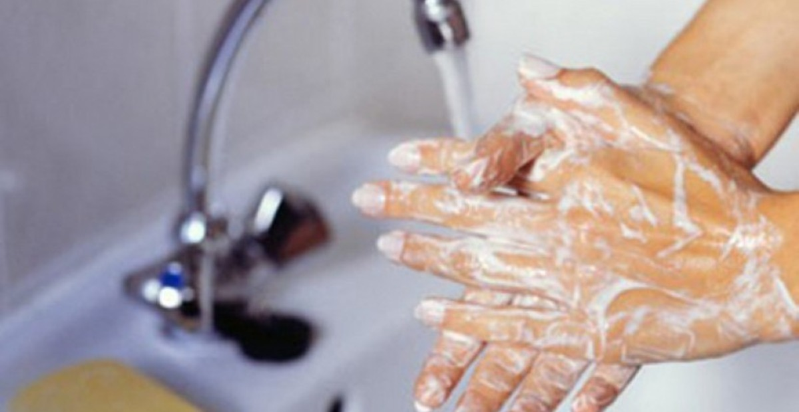
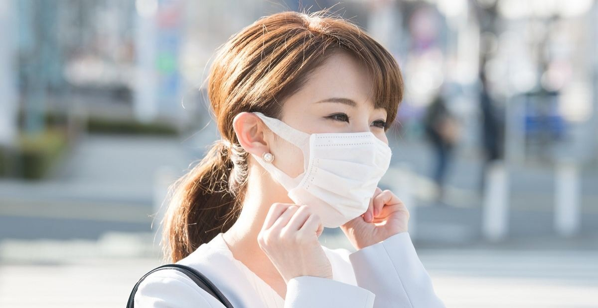
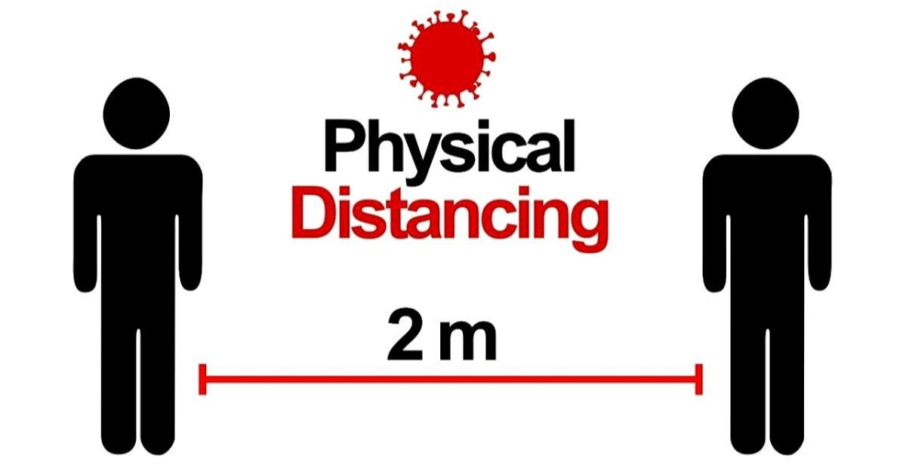

Informasi seputar pencegahan COVID-19 secara tepat
COVID-19 adalah penyakit yang disebabkan oleh virus severe acute respiratory syndrome coronavirus 2 (SARS-CoV-2). COVID-19 dapat menyebabkan gangguan sistem pernapasan, mulai dari gejala yang ringan seperti flu, hingga infeksi paru-paru, seperti pneumonia.
Kasus pertama terjadi di kota Wuhan, Cina, pada akhir Desember 2019. COVID-19 menular antar manusia dengan sangat cepat dan menyebar ke puluhan negara, termasuk Indonesia.
Nah, penularannya bisa melalui beberapa bentuk :
- Menghirup percikan ludah (Droplet) dari penderita COVID-19 yang sedang bersin atau batuk.
- Memegang mulut, hidung, atau mata tanpa mencuci tangan setelah menyentuh benda yang terkena droplet penderita COVID-19.
- Kontak jarak dekat (kurang dari 2 meter) dengan penderita COVID-19 tanpa menggunakan masker.
Gejala - gejala umum yang bisa menandakan seseorang jika terinfeksi COVID-19 :
- Demam (di atas 38°C)
- Batuk kering
- Sesak napas
Untuk pencegahan penyebaran COVID-19, kita dapat menerapkan protokol kesehatan yang sudah disosialisasikan oleh pemerintah yaitu 3M :
- Mencuci Tangan

Mencuci tangan dapat menurunkan risiko penularan COVID-19 sekitar 35 persen. WHO menyarankan, cuci tangan menggunakan sabun/antiseptik selama 20-30 detik dan menerapkan langkah-langkah yang benar. Klik disini untuk melihat panduan mencuci tangan yang baik dan benar.
- Menggunakan Masker

Penggunaan masker saat berpergian atau beraktivitas dapat menurunkan resiko penularan COVID-19 sekitar 45 persen untuk masker kain dan 70 persen untuk masker bedah. Klik disini untuk melihat jenis - jenis masker yang direkomendasikan agar dapat menurunkan resiko penularan COVID-19.
- Menjaga Jarak dan Menghindari Kerumunan

Saat terjadinya pandemic COVID-19, kita disarankan untuk melakukan aktivitas sehari - hari dirumah atau yang kita kenal dengan istilah "WFH" (Work From Home), namun ada beberapa kegiatan pekerjaan atau aktivitas yang tidak bisa dilakukan dari rumah. Maka dari itu, kalau memang harus keluar rumah untuk melakukan aktivitas, kita harus menjaga jarak minimal 1 - 2 meter dan menghindari kerumunan sebisa mungkin.
Referensi
https://www.alodokter.com/covid-19 https://tirto.id/apa-itu-3m-untuk-mencegah-menekan-penularan-virus-covid-19-f5tV https://www.lifebuoy.co.id/semua-artikel/berita-kesehatan/7-langkah-cuci-tangan-yang-disarankan-agar-bebas-kuman.html http://sehatnegeriku.kemkes.go.id/baca/rilis-media/20200921/2434977/kemenkes-sarankan-3-jenis-masker-dipakai/ https://www.alodokter.com/tetap-harus-bekerja-di-luar-rumah-saat-pandemi-covid-19-terapkan-ini-agar-tidak-tertular https://www.kompas.com/sains/read/2020/04/01/112328423/panduan-lengkap-masker-kain-bedah-dan-n95-untuk-cegah-corona?page=all